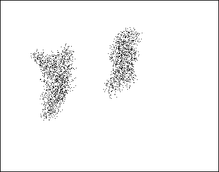

| Experience with growth models suggested to physicists David Peak and Burt Donn that
Diffusion Limited Aggregation (DLA)
could mediate the growth at some
early (and small) stage of development. |
| Instead of forming hard grains of sand, the
dust motes diffuse through the cloud and form wispy, filamentary fractal dust balls. |
| Physical measurements of DLA clusters in 3-dimensional space suggest the dust balls
should have mass dimension about
2.5, so |
| mass = radius2.5 |
| Yet the dust ball sweeps out a space with volume = radius3 |
| So density = mass/volume = radius2.5/radius3 = 1/radius0.5 |
|
| That is, the larger the dust ball, the more tenuous it is. This has two consequences,
helpful for the formation of planets. |
| * The paths of these large dust balls are slowed by
friction against the gas cloud, guaranteeing the relative speed
of interaction is much smaller than the Keplerian orbital speed. |
| Consequently, these fractal
wisps can collide and stick together, forming larger wisps. |
| * When large enough wisps
collide, there can be some restructuring, melting at the collision sites. |
|  |